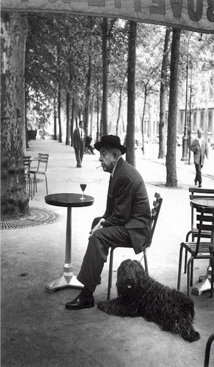

Lovely: Learning Language
Kad bih mogla, ja bih se samo bavila učenjem jezika. Ne sa ciljem da postanem neki extra jezički stručnjak, da znam najfinije finese, ili pišem poeziju na tom nekom jeziku. Noop. Mislim na učenje da znam koliko mi treba, srednje ka dobrom.
I učila sam jezike, nije da nisam.
Engleski, od petog razreda, počneš sa dilemom da li si grill ili girl, i kako to da je hide and seek žmurke kad su to dve reči, a ovde jedna? Posle u srednjoj školi, bilo je svega, od nekih suviše upečatljivih likova da bi bili u stanju da te ozbiljnije nauče jezik, do ekstra Zoke, sa kojom se srednja škola pretvorila u učenje engleskog, što je bilo ok, prvo jer sam bila prevodilački smer, a drugo, iako su predmeti koje učih bili načelno zanimljivi, profesori su bili nedovoljno obdareni da ih ipune nekim životom.
Na Filozofskom je praksa bila da te tokom ta tri semestra provuku kroz tri zahtevna gramatička kolokvijuma + prevođenje jedne stručne knjige. Mislim, ono, uzmeš knjigu i prevedeš, a ona ti je na ispitu negde otvori, i ti pričaš.
Od kad sam otišla u inostrantvo i studirala na engleskom, cela stvar je postala mnogo opuštenija, kao neko prirodno okruženje.
Ali me zato godinu dana boravka u Poljskoj, dva semestra časova poljskog, i relativna sličnost jezika nisu osposobil za neku veću priču od one u prodavnici ili pošti. Vremenom sam i to zaboravila.
U srednjoj školi učila sam i latinski, tri godine. Per aspera ad astra.
I francuski.
Il a mis le cafe
Dans la tasse
Il a mis le lait
Dans la tasse de cafe
Il a mis le sucre
Dans le cafe au lait
Avec la petite cuiller
Il a tourne
Il a bu le cafe au lait
Et il a repose la tasse
Sans me parler
Posle sam još dve godine išla u Jovanovu da doučim, i bilo je ok, ali u Francusku nikad nisam išla. Sad čitam poneki tekst/naslov u web izdanjima novina, i to je to. Sposobnost da ga pričam je skoro nestala kad sam prešla na italijanski. Ali, francuski je izgleda takav jezik da brzo zamire u glavi (a sporo se u nju smešta). Kad je pre nekog vremena Kiko doveo jednog Francuza u Beograd, probao je da nas nekoliko (i sebe) ubaci u govorenje francuskog, ali bezuspesno.
Italijanski sam u Italiji naučila u rekordnom roku, i nema teorije da ga zaboravim, pošto neću, jel'.
Kad sam bila klinka, ujak me učio arapski, kad se vratio iz Iraka. Sećam se selamalejkum-alejkumselam.
***
Što se tiče Srbije en general, reklo bi se da dosta (relativno) mlađih ljudi zna engleski, to često pominju i stranci koji ovamo dolaze, a verujem da je dobrim delom povezano sa time što se ovde ne nasnimava srpski na strane programe, kao u većem delu Evrope. Nisam, međutim, uspela da nađem nikakve podatke, sve pretrage su završavale na nekim tekstovima 'kakvi smo mi Srbi' ili kako je teško onima koji ne znaju strane jezike. No, koliko je takvih, ja ne nađoh.
No, pretpostavljam da bi svako istraživanje pokazalo da smo izuzetne poliglote, ne samo u srbiji, nego i i drugim zemljama bivše Jugoslavije, pošto svi svima znamo jezike. Milina. A kako tek dobro deluje u CiViju...
Kada je reč o EU, istraživanje Eurobarometra objavljeno početkom godine kaže: "56% of citizens in the EU Member States are able to hold a conversation in one language apart from their mother tongue (...). With respect to the goal for every EU citizen to have knowledge of two languages in addition to their mother tongue, 28% of the respondents state that they speak
two foreign languages well enough to have a conversation. This is especially the
case in Luxembourg (92%), the Netherlands (75%) and Slovenia (71%). 11% of the
respondents indicate that they master at least three languages apart from their mother
tongue."
I tako.
Ja bih jedno oživljavanje francuskog na terenu, onda španski, gde je španski tu je i portugalski, rumunski nije problem posle svih tih romanskih varijeteta, a za ovo ostalo, videćemo.
Najveću averziju imam prema ruskom. Tako se pogodilo, sticajem okolnosti.
Komentari
Marina, ovo lepo izgleda. Moze prevod?
La Lara | 27.07.06 09:04
Evo, ovako:
Ξενοφιλία (Ξένος-stranac,Φιλία-prijateljstvo)
Ξενοφοβία (Φόβος-strah,xenophobia)
Φιλοξενία (Φιλό-ljubim,volim;gostoprimstvo)
'Eρωτας...Ε,ovo sigurno znas i sama
Ουρανίο τόξο (Ουρανός-nebo;Tοξό-luk,strela;Duga)
Θέατρο..Ι ovo ti je poznato(think in English)
Μουσική..###################################
Σχολείο..###################################
Σχολειό..(Komentar)
Μητέρα...(Μαjka)
Eλικόπτερο(Ι ovo znas)
Aερόπλανο(Αvion)
Kαλημέρα(Καλό-Dobro;Η μέρα-Dan;Dobro jutro)
Aγάπη (Ljubav)
Σ' αγάπω!!!!!
Marina | 27.07.06 09:58
Lovely, as I said.
Zahvaljujuci ljubaznosti Zavoda za statistiku (posaljes mail, oni odgovore, nije tesko), dobila sam podatke o tome koji se jezici i koliko sada uče u školama:
"Učenje stranog jezika u osnovnim i srednjim školama u Republici Srbiji
u školskoj 2004/2005.godini
OSNOVNE ŠKOLE
U osnovnim školama u RS strani jezik uči 332422 učenika. Po jezicima situacija je sledeća:
ruski - 56948 učenika- 13,13 %
engleski - 224978 - 67,7 %
francuski - 33724 - 10,14 %
nemački - 24762 - 7,44 %
ostali - 222 - 0,06 %
SREDNJE ŠKOLE
Ukupan br. učenika koji uče strani jezik 291477 .
ruski - 46592 - 16,0%
engleski - 232409 - 79,7%
francuski - 36853 - 12,6 %
nemački - 27206 - 9,3 %
ostali - 2036 - 0,7 %
La Lara | 27.07.06 10:09
Nešto nije u redu sa našim srednjim školama, zbir je preko 100%. Ili negde uče po dva jezika.
Francuski sam dva puta počinjao, pa odustajao (sindrom slova "E"). A mnogo volim entomologiju (pardon etimologiju). Pa bih voleo da jedan od devet paralelnih života posvetim tome - izučim latinski, starogrčki, arapski, persijski i još po nešto.
siboney | 27.07.06 10:27
Pa mislim da sad u većini škola uče dva jezika. A sta je 'sindrom slova E?'.
La Lara | 27.07.06 10:32
U moje doba to učenje dva jezika još nije bilo izmišljeno.
"Sindrom slova E" je otkriven od strane Radovana III, kad je Deka učio azbuku...
siboney | 27.07.06 12:03
Iz BBC Magazina, današnjeg: "The World Cup, holiday homes and budget airlines are feeding an unexpected passion for learning languages."
http://news.bbc.co.uk/2/hi/uk_news/magazine/5216428.stm
La Lara | 27.07.06 15:43
Ja ne govorim ni jedan strani jezik osim engleskog a to se ne racuna. Ni jedan. To je tuzno. Mogu da prepoznam skoro svaki indo-evropski a htela bih da govorim francuski koji sam isto bezuspesno dva puta ucila, spanski (koji samo sto nisam progovorila) i ostale romanske, nemacki i neki skandinavski. Ruski mi je sladak.
Jada iz Eleja | 27.07.06 16:32
Mačko, ali ti si strucnjak za engleski
La Lara | 28.07.06 09:21
Ja ucila francuski od 4. godine, isla u zabaviste za ucenje francuskog, pa onda u osnovnoj svih osam godina, al u srednjoj kad smo krenuli da ucimo bonjour enfants - bonjour madame, sve sam zaboravila. I sada kao citam i sve razumem al da pricam nema sanse. A u francuskoj nisam nikad bila. Mozda bi se to svo nakupljeno znanje refreshovalo kad bih provela neko vreme u Fr, al ovako trune svakim danom...
elektrokuhinja | 29.07.06 07:20
Ja predlazem da osnujemo klub nas koji smo ucili i zaboravili francuski, i da se borimo za svoja prava
La Lara | 31.07.06 09:50
Tako je sestro, mislim, totalno smo obespravljeni :)
 kiko | 31.07.06 11:29
kiko | 31.07.06 11:29
Odlicna tema! :) Moja malenkost naučila većinu engleskog u osnovnoj zahvaljujući super nastavniku i filmovima bez titla. U srednjoj stagnirala zbog dosadne nastavnice ali zato počela sa nemačkim koga sam ovde i doučila. Francuski pokušala 2 puta ali je mlogo težak. :) Mislila sam da je sindrom slova E u é i è? :)) Moraću da iskoristim priliku koja mi se pruža ovde, gde je znanje francuskog, nemačkog, švajcarskog nemačkog i italijanskog skoro pa standard. Ako ništa drugo, želim da naučim italijanski zbog BabsiJones bloga. :)
 Maja | 01.08.06 10:00
Maja | 01.08.06 10:00
La Lara, dobar izbor knjiga na engleskom mozes naci na http://solair.eunet.yu/~ivp419413
Iz licne je kolekcije koju prodajem iz preke potrebe.
Igor | 05.08.06 01:25
 RSS feed
RSS feed
 sadržaji se objavljuju pod
sadržaji se objavljuju pod
Ξενοφιλία
Ξενοφοβία
Φιλοξενία
΄¨Ερωτας
Ουράνιο τόξο
Θέατρο
Μουσική
Σχολείο
Σχολειό
Μητέρα
Ελικόπτερο
Αεροπλάνο
Καλημέρα!!!
Αγάπη
Σ΄ αγαπώ!
Marina | 27.07.06 08:43